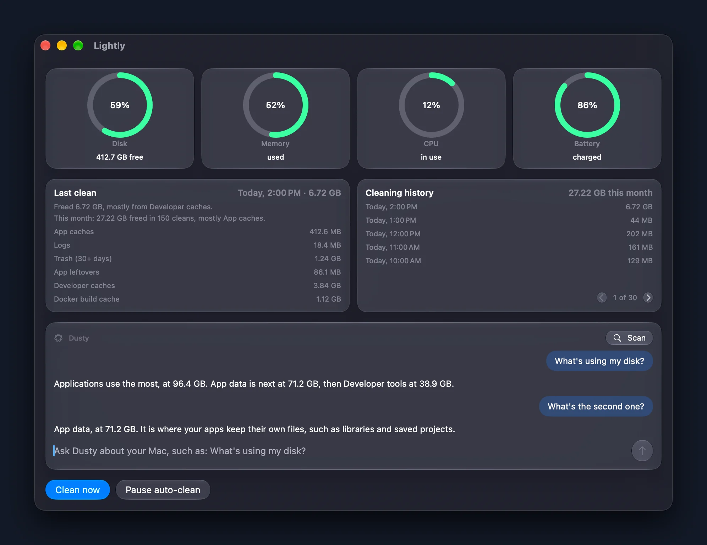
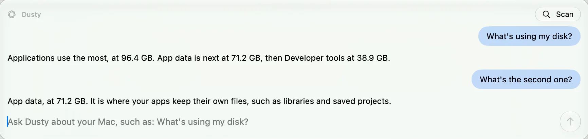
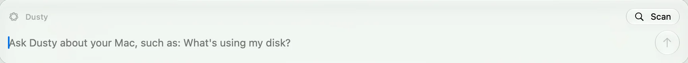
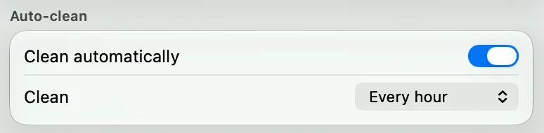

What you can ask
“What’s using my disk?”
Dusty answers from measured folder sizes, largest first.
“What’s the second one?”
Follow-ups work. It remembers your last 4 exchanges.
“List down the biggest items.”
You get a numbered list, each item with its size.

It only rewords facts
Dusty has no tools. It is handed measured numbers and can only put them into words. It cannot decide what gets deleted, and it never tells you to remove anything.
Answers are checked against those numbers. One that fails the check is replaced by the numbers themselves.
Thinking
What it knows
Folder totals and the 12 biggest items, so a list can be short or incomplete.
What it remembers
Your chat stays in memory until you quit. It is never saved.
Where it runs
On your Mac, with Apple Intelligence. Nothing is sent anywhere.
How to stop it
Turn off Use Apple Intelligence in Settings and Dusty goes away.
Press Scan
Scan finds the biggest items on your Mac and tells you what each one probably is. It only reads. Nothing is removed.

Every clean, in plain words
After each run, Dusty writes one line about it, such as “Freed 6.72 GB, mostly from Developer caches.” If a folder could not be cleared, it says that too.

No Apple Intelligence?
Dusty needs a Mac that supports it. Everything else in Lightly works without it. The panel is simply not shown.
Requirements